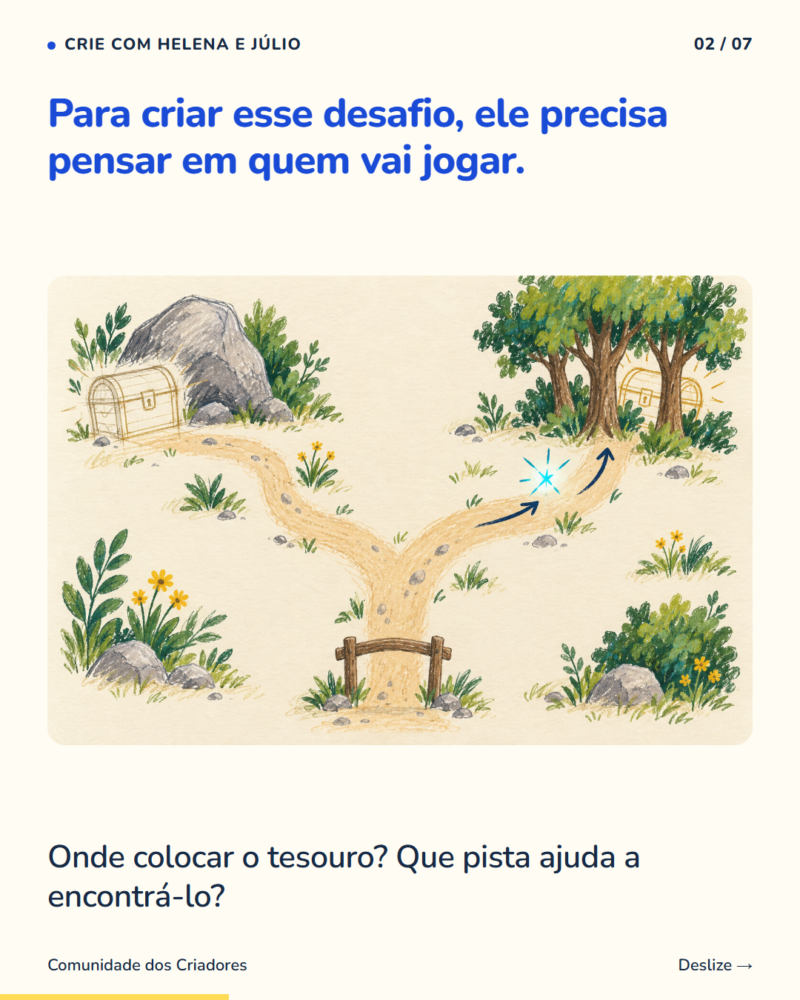
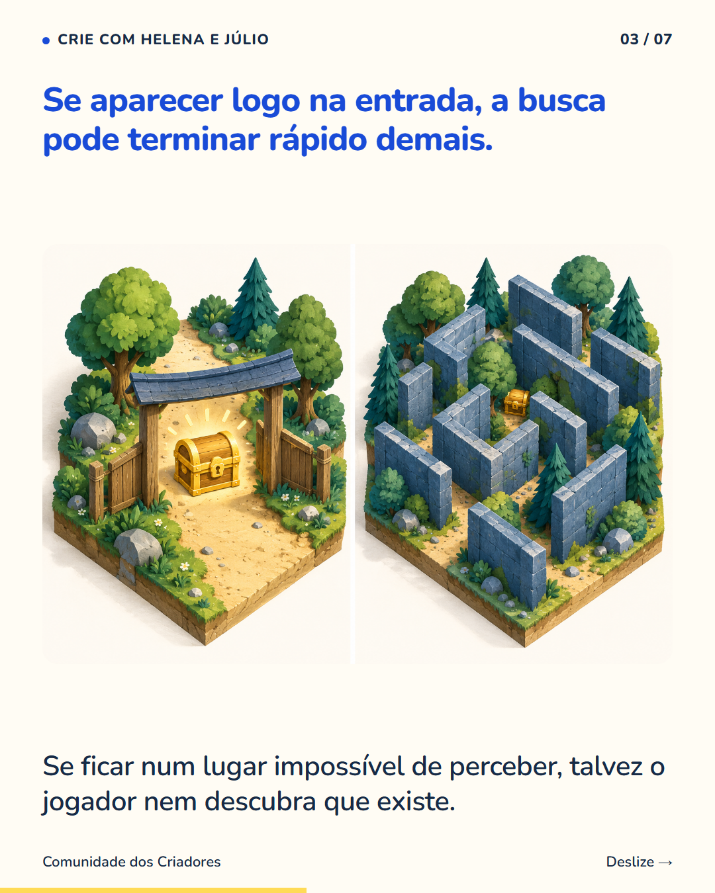
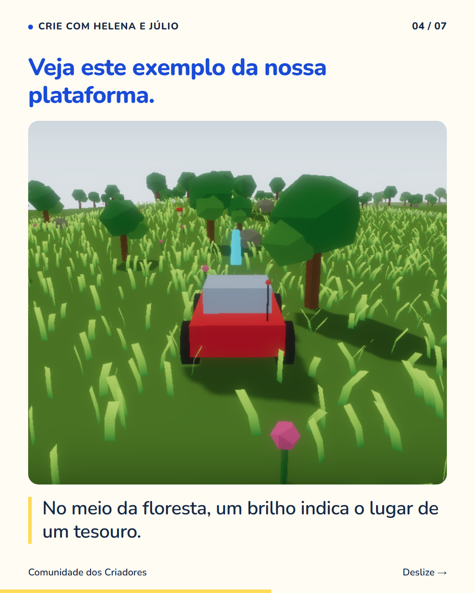
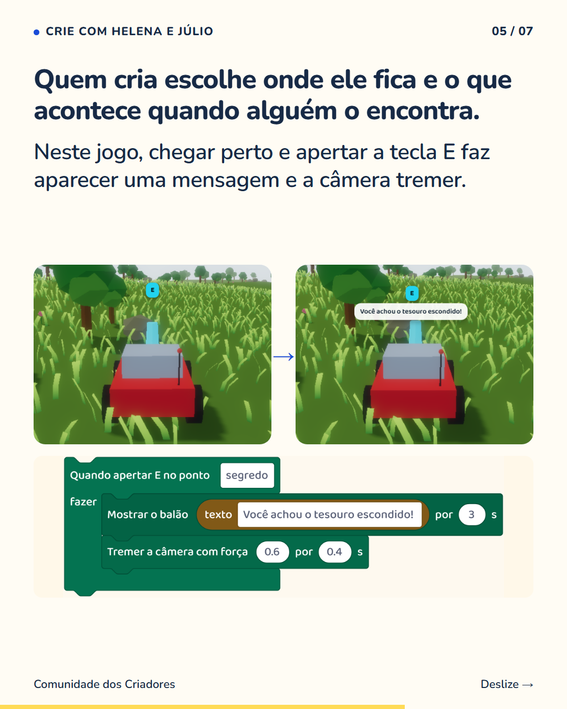
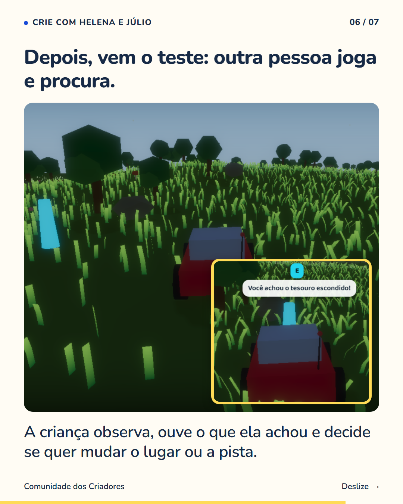
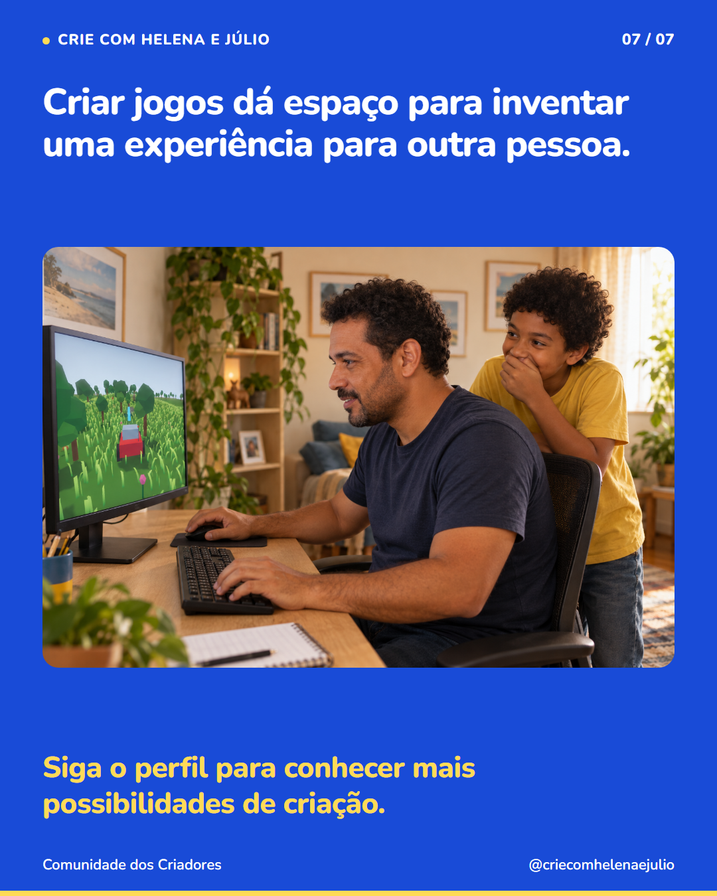

7 slides · 1080 × 1350 · Copy revisada · Da pista à descoberta






Num jogo criado pelo seu filho, você pode ser a pessoa que ainda não sabe onde está o segredo. Ele escolhe o esconderijo, pensa numa pista e acompanha sua procura. Se você passa várias vezes pelo lugar sem perceber nada, isso dá assunto para conversar: a pista estava clara? Faltou mostrar que havia algo para encontrar? No exemplo Meu Mundo, um brilho marca o tesouro na floresta. A mensagem aparece quando o jogador chega perto e aperta E. Essas respostas foram escolhidas por quem criou o jogo. É uma forma concreta de pensar na experiência de outra pessoa. Siga o perfil para ver mais ideias.